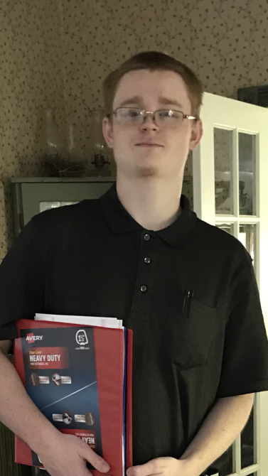

My name is Brandon Wallin, I am a 20 year old adult male. I was born in Oregon but have lived most my life in Texas. I am learning to code in order to begin a career for myself and create a bright future for me. My hobbies involve playing games, working on my Minecraft server, talking to friends, and watching informational videos. I do not currently have much experience in coding, but I do have a few years of experience in configuration so reading large piles of text and deciphering what it means isn't so far fetched. I worked as Loss Prevention at Rite Aid for roughly 5 months before leaving due to moving in hopes of starting school. While with Rite Aid I performed various security tasks and kept the store theft free. I take great pride in my work and would rather start from scratch to make it work than just say "oh well guess I cant do it". Im a bit of a introvert but have no issues contacting someone once introduced. Thanks for taking the time to read all of this. I know any effort spent on me will not go to waste!